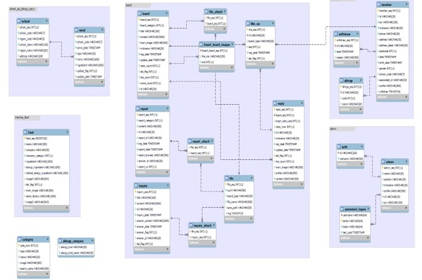

Pick A Food
PICK A FOOD
모두에게 당연한 시간 같지만, 당연하지 않은 사람들이 있습니다. 바로 '식품 알레르기 보유자'들입니다.
'식품 알레르기 보유자'들은 매 순간마다 자신이 먹을 음식을 체크해야 하는 불편함을 겪습니다.
그래서 PICK A FOOD는 '쉽고 편하게 알레르기 성분을 확인할 수 있는 서비스'를 개발했습니다.
원치 않는 식재료를 선택(Pick)하기만 하면, 사용자를 위한 음식(Food)을 알려드립니다.
모두가 안심하고 즐거운 식사 시간을 보내는 세상. PICK A FOOD가 함께 만들어 가겠습니다.
사이트 번개장터에서 UI와 전반적인 기능을, 당근마켓에서 에코지수(당근마켓의 매너온도)와 거래 성사 과정(채팅)을 벤치마킹하였습니다.
[개발 환경]
* O/S - Windows 11 64bit
* WAS - Apache Tomcat/9.0
* DBMS - MariaDB
* Pattern - IntelliJ / DataGrip
* Github
[사용 기술]
* 프로그래밍 언어 - Java, JavaScript, JSP, JPA, Html5,
* DB - MariaDB
* 사용 Tool - IntelliJ, WebStorm, DataGrip, Git, Slack, Asana
* 프레임워크 - Spring Security, Spring MVC, Spring boot, MyBatis, Thymeleaf
* 프론트 엔드 - Axios, Ajax, JQuery, Bootstrap, React
* 급식 식단 정보 API, kakao API, google Vision API, Dialogflow
[기간] - 2022년 5월 23일 ~ 진행중
[인원] - 4명
## 기능
[나의 주요 담당 기술]
>
>
>
>
>
>
소프트웨어 구성도
ERD

관리자 창
## 화면
> 대쉬 보드
> 자유게시판 목록 / 상세 페이지 / 댓글
> 회원 문의

> 급식
> 검색